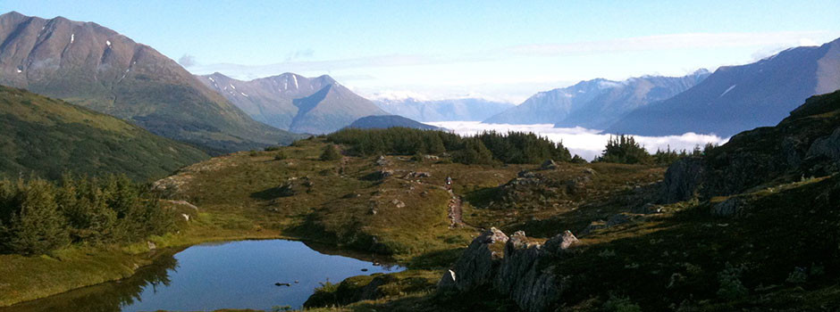

Lost Lake Length: 5 km, loop via Lost Lake and Petrified Tree. From there a short spur trail leads to Lost Creek Falls, a 12 m plunge into a steep, dark, timber-covered canyon. From the junction to Lost Creek Falls, the trail climbs south up a steep 106 m rocky rim. On the bench above the rim, the trail then joins the horse trail and continues west to Lost Lake and Petrified Tree. The trail east heads to Roosevelt Corral and approximately 4 km to Tower Campground.
Code LLTRP
Length from Roosevelt Lodge to:
Lost Creek Falls (spur trail) 0.4 km
Lost Lake 1.28 km
Petrified Tree 2.9 km
Tower Ranger Station (via Petrified Tree) 4.34 km
Elevation change: Trailhead at 1932 m (140 m gain).
Trailhead: The trail starts behind Roosevelt Lodge. Or, as an alternate route, start at the Petrified Tree, about a quarter mile east of the Blacktail Plateau Drive exit or about 2.2 km west of Tower Junction.
The trail begins directly behind Roosevelt Lodge. It crosses a footbridge and over a wet seep shrouded with ferns.
In 1975, an earthquake with an epicenter near Norris Geyser Basin shook the Yellowstone region. It brought down delicate spires in the Grand Canyon, and along this rim, large rockfalls tumbled down the canyon, nearly striking passing hikers.
The trail continues along the shore of Lost Lake, where beaver activity usually can be spotted. In late June through early July, the edges of this lake are covered with the arrow-shaped, leather-like leaves and yellow, baseball-sized flowers of yellow pond lilies. The trail follows the drainage of Lost Lake through Douglas fir and aspen, and emerges at the Petrified Tree parking area.